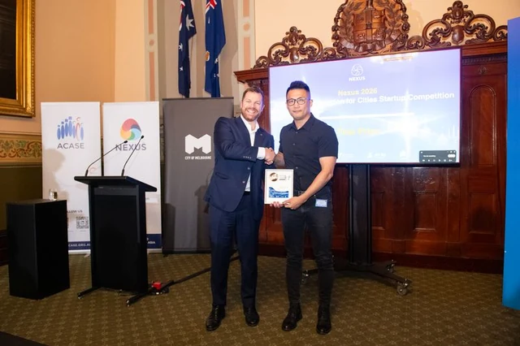
First place at NEXUS 2026
MARRS won first place at the NEXUS “AI-Powered Innovation for Cities” Pitch Competition in Melbourne.
Read update →The Monash Research Center of Automated and Resilient Road Systems (MARRS) was established in 2018 and expanded in 2024. Led by Associate Professor Nan Zheng, we advance transport research through collaboration and interdisciplinary methods. Our work spans urban and freight transport, robotic vehicles, resilient networks and future mobility services.
We are committed to excellence in research, education, and service. Our lab provides a supportive and collaborative environment where creativity and innovation thrive. We welcome collaborations with industry partners, other academic institutions, and researchers from around the world.

MARRS won first place at the NEXUS “AI-Powered Innovation for Cities” Pitch Competition in Melbourne.
Read update →Associate Professor Nan Zheng received the Dean's Award for Innovation in Learning and Teaching and was nominated for the President's Award.
Read update →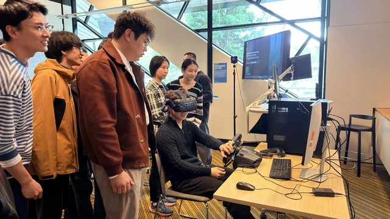
MARRS hosted more than 20 visiting students from China, including Central South University, Beijing Jiaotong University and Dalian University of Technology.
Read update →MARRS won first place at the 2026 NEXUS “AI-Powered Innovation for Cities” Pitch Competition in Melbourne, showcasing AI-enabled innovation for future cities.
Associate Professor Nan Zheng received the Dean's Award for Innovation in Learning and Teaching and was nominated for the President's Award.
MARRS hosted more than 20 visiting students from China, including Central South University, Beijing Jiaotong University and Dalian University of Technology.
Xiaowei Yu has joined the lab to research human–AI interaction.
Lingwen Zhu has joined the lab to research medical and emergency logistics.
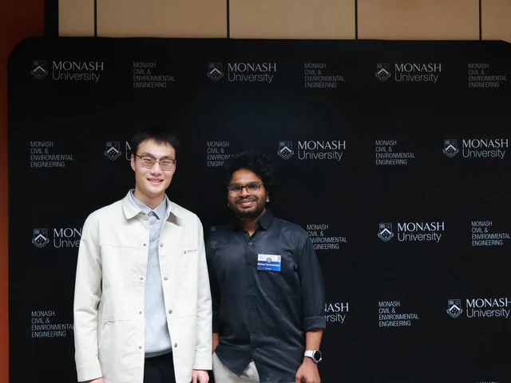
Mohan Kumar and Ji Zhou gave oral and poster presentations at the 5th Monash Engineering Postgraduate Conference.
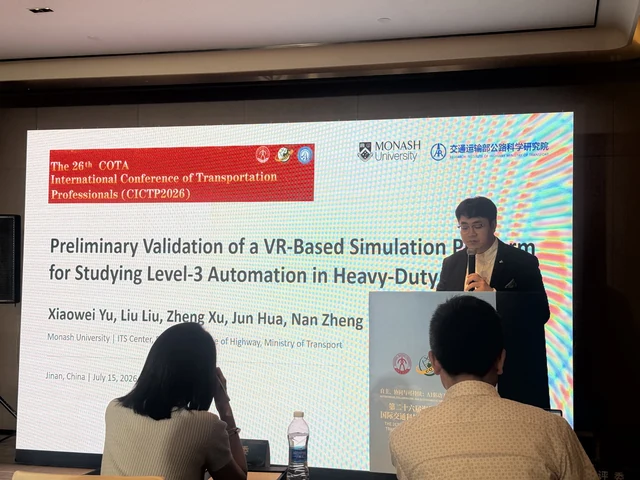
Xiaowei Yu gave an oral presentation at the 26th COTA International Conference of Transportation Professionals (CICTP 2026).
Haoran Hu received a PhD offer to research logistics and urban air mobility.
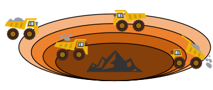
Recent studies on autonomous mining systems have been published, including Zhou et al. (2026) in Transport Policy, 185, 104218; Transportmetrica B: Transport Dynamics, 14, 2659893; and the IEEE Intelligent Vehicles Symposium (IV), 1932–1937. Transport Policy paper · Trajectory planning paper.
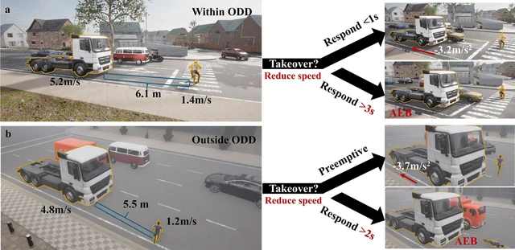
A study on ADS-equipped heavy goods vehicle operations has been published: Xu et al. (2026), Accident Analysis & Prevention, 234, 108594. View paper.
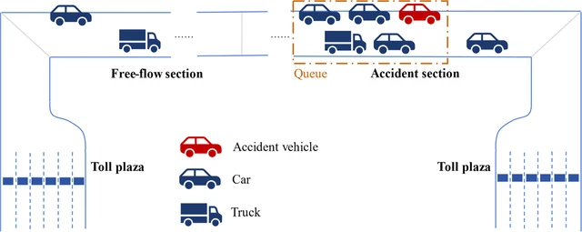
A study on an integrated multi-scenario calibration framework for driving behaviour parameters in highway traffic simulation has been published: Shi et al. (2026), Computer-Aided Civil and Infrastructure Engineering, 48, 100095. View paper.
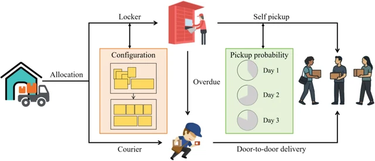
A study on last-mile delivery optimisation with smart modular lockers has been published: Zhou et al. (2026), Computers & Industrial Engineering, 217, 112069. View paper.
Ji Zhou successfully completed their PhD confirmation.
Yuxuan Li successfully completed their PhD confirmation.
Jiaxuan Zhou has joined the lab to research human–vehicle interaction.
Dr. Zheng Xu has joined Central South University as a Professor.
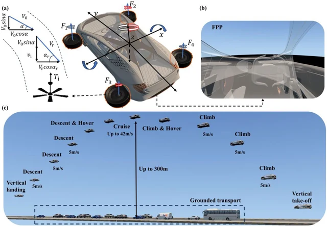
Our research on low-altitude transport and autonomous systems includes Xu et al. (2026), Journal of Air Transport Management, 132, 102948; Xu et al. (2025), Transportation Research Part C, 181, 105367; Huang et al. (2025), Transportation Research Part C, 179, 105271; Zhao et al., IEEE Transactions on Vehicular Technology (online 2025; issue 2026); and Zhou et al. (2025), IEEE Transactions on Intelligent Vehicles, 10, 5008–5022. Low-altitude transport study.
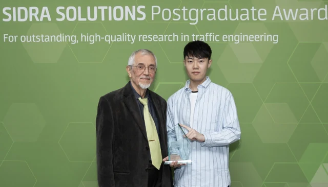
Dr. Zheng Xu received the 2025 SIDRA SOLUTIONS Postgraduate Award for his thesis, 'Human-Centric Analysis of Critical Scenarios and Operational Efficiency during High-level Autonomous Driving'.
Ji Zhou has joined the lab to research optimisation in autonomous systems.
Congratulations to Dr. Yinfei Xi on completing his PhD.
Congratulations to Dr. Zheng Xu on completing his PhD.
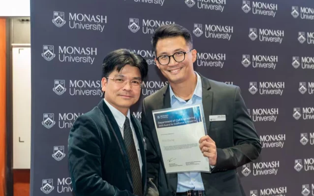
Nan Zheng received the Outstanding Supervision Award in recognition of exceptional graduate research supervision.
Congratulations to Dr. Dong Xiao on completing his PhD.
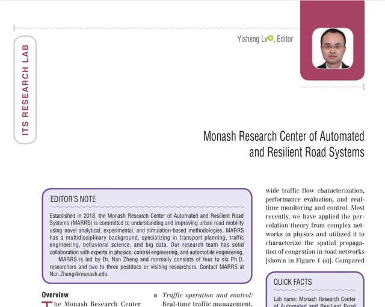
MARRS was selected as an ITS research lab by the Editor-in-Chief of IEEE Intelligent Transportation Systems Magazine.
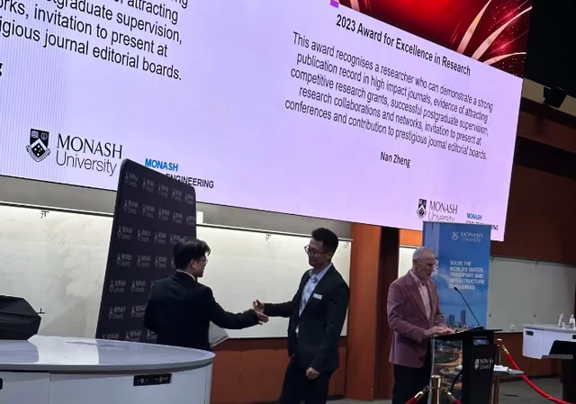
Dr. Nan Zheng is awarded Excellence in Research in recognition of a strong publication record in high-impact journals, evidence of attracting competitive research grants, successful postgraduate supervision, active research collaborations and networks, invitations to present at conferences, and contributions to prestigious journal editorial boards.
Congratulations to Dr. Ruyang Yin on completing her PhD.
Associate Professor Nan Zheng is the founding director of MARRS. He received his BSc, MSc and PhD in Transportation Engineering from Southeast University, Delft University of Technology and École polytechnique fédérale de Lausanne (EPFL) in 2007, 2009 and 2014, respectively.
Before joining Monash University in 2018, he held postdoctoral appointments at EPFL and ETH Zurich and an Associate Professor position at Beihang University.
His research focuses on macroscopic traffic flow theory, regional traffic control and optimisation, autonomous systems, safety assessment and future transport services.
His publications connect transport network modelling, intelligent control and data-driven methods with real-world mobility challenges.
Research Fellow
Project Manager
Research Fellow
Simulation
Research Fellow
Data
Ph.D. Student
Road
Ph.D. Student
Optimisation in autonomous systems
Ph.D. Student
Human factors
Ph.D. Student
Human–vehicle interaction
Ph.D. Student
Medical and emergency logistics
Ph.D. Student
Human–AI interaction
Ph.D. Student
Logistics and urban air mobility
Ph.D. Student
Algorithm
Ph.D. Student
Simulation
Ph.D. Student
Simulation
Alumna
Algorithm
Now academic at Southeast University
Alumna
Data
Now academic at Heriot-Watt University
Alumnus
Simulation
Now academic at Nanjing University of Science and Technology
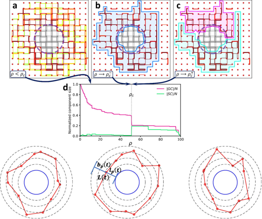
Our research connects macroscopic traffic flow theory, macroscopic fundamental diagrams (MFDs) and network science to understand and manage congestion in large urban road networks. We develop perimeter and hierarchical control, coordinated operations and pricing strategies for multimodal and connected transport, with attention to resilience, uncertainty and equitable access.
Advanced Engineering Informatics, 71(Part A), 104258, 2026
View paperTransportation Research Part C: Emerging Technologies, 176, 105124, 2025
View paperTransportation Research Part C: Emerging Technologies, 174, 105116, 2025
View paperTransportation Research Part B: Methodological, 195, 103219, 2025
View paperTransportation Research Part C: Emerging Technologies, 145, 103922, 2022
View paperTransportation Research Part C: Emerging Technologies, 142, 103792, 2022
View paperTransportation Research Part B: Methodological, 156, 50–75, 2022
View paperTransportation Research Part A: Policy and Practice, 136, 357–374, 2020
View paperTransportation Research Part B: Methodological, 83, 36–58, 2016
View paperTransportation Research Part C: Emerging Technologies, 62, 133–148, 2016
View paperTransportation Research Part A: Policy and Practice, 46(8), 1291–1303, 2012
View paper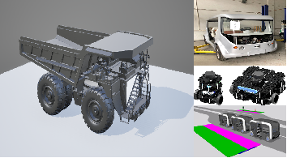
We study autonomous vehicles and robotic transport systems, from motion and trajectory planning to robust control, high-fidelity simulation and human–vehicle interaction. Our work supports coordinated vehicles in complex road and off-road environments, including autonomous haulage, and evaluates safety, operational performance and the experience of road users.
IEEE Transactions on Vehicular Technology, 75(6), 9157–9170, 2026
View paperTransportmetrica B: Transport Dynamics, 14(1), 2659893, 2026
View paperTransportation Research Part C: Emerging Technologies, 179, 105271, 2025
View paperInternational Journal of Human–Computer Interaction, 41(12), 7273–7291, 2025
View paperAccident Analysis & Prevention, 215, 108011, 2025
View paperAnalytic Methods in Accident Research, 45, 100370, 2025
View paperTransportation Research Part E: Logistics and Transportation Review, 194, 103937, 2025
View paperControl Engineering Practice, 153, 106126, 2024
View paperJournal of Advanced Transportation, 2024(1), 3835831, 2024
View paperMultimodal Transportation, 3(2), 100133, 2024
View paperTransportation Research Part C: Emerging Technologies, 158, 104451, 2024
View paperTransportation Research Part A: Policy and Practice, 152, 36–53, 2021
View paper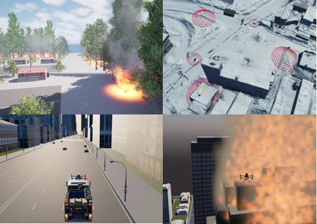
We build on our foundations in resilient transport networks, urban traffic coordination, autonomous vehicles and UAVs, and intelligent systems and algorithms to explore emergency and disaster response. We consider how urban infrastructure and coordinated traffic management can maintain essential access during disruption, how emergency services can be planned across complex urban environments, and how autonomous ground vehicles and UAVs can support inspection, situational awareness and response in remote mountain and bushfire settings.
30th International Conference of Hong Kong Society for Transportation Studies, Hong Kong, 14–15 December 2026 (upcoming conference)
Conference websiteIEEE Transactions on Vehicular Technology, 75(6), 9157–9170, 2026
View paperTransportation Research Part B: Methodological, 195, 103219, 2025
View paperAutomation in Construction, 168, 105837, 2024
View paperJournal of Transportation Engineering, Part A: Systems, 149(7), 04023058, 2023
View paperTransportation Research Part B: Methodological, 156, 50–75, 2022
View paperWe investigate future logistics services that integrate drones, road vehicles and local infrastructure. Our work connects infrastructure planning, operations research for routing and scheduling, and service evaluation that accounts for the built environment, geography and population distribution. We examine cost, responsiveness, community impacts and spatial equity, alongside policy and governance, with the aim of improving access for rural and remote residents and supporting community-led services for Aboriginal and Torres Strait Islander peoples.
Design for Augmented Humanity, 1(1), 67–82, 2026
View paperJournal of Air Transport Management, 132, 102948, 2026
View paperSSRN, posted 6 August 2026 Preprint · not peer reviewed
View preprintTransportation Research Part A: Policy and Practice, 136, 357–374, 2020
View paper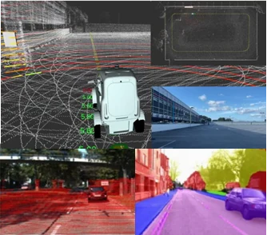
We develop data-driven and agentic AI methods for transport planning and operations. Our work combines large language models, reinforcement learning, robust optimisation and predictive control to support route choice, vehicle coordination and service dispatch under uncertain demand and travel conditions.
Transportation Research Part C: Emerging Technologies, 180, 105307, 2025
View paperAdvanced Engineering Informatics, 71(Part A), 104258, 2026
View paperTransportation Research Part C: Emerging Technologies, 178, 105217, 2025
View paperTransportation Research Part C: Emerging Technologies, 169, 104870, 2024
View paperJournal of Intelligent and Connected Vehicles, 7(3), 219–228, 2024
View paperTransportation Research Part E: Logistics and Transportation Review, 189, 103687, 2024
View paperTransportation Research Part C: Emerging Technologies, 148, 104019, 2023
View paperIEEE Transactions on Intelligent Transportation Systems, 23(11), 20352–20367, 2022
View paperJournal of Intelligent Transportation Systems, 26(6), 639–654, 2022
View paperJournal of Transportation Engineering, Part A: Systems, 147(8), 04021044, 2021
View paper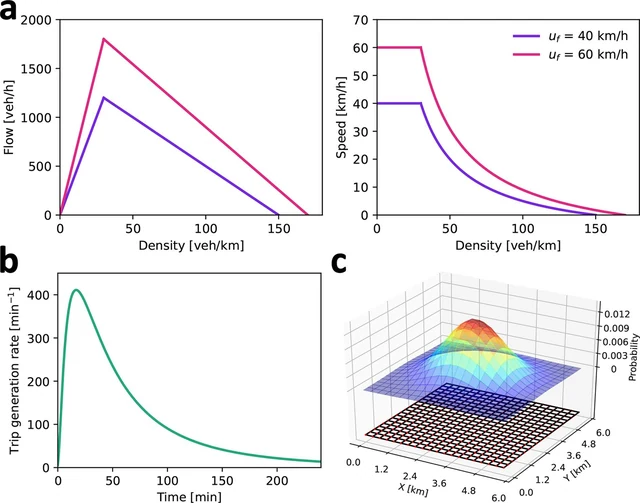
We analyse transport and safety data to support evidence-based decisions. Our work includes crash modelling with imbalanced data, the effects of built environment and traffic conditions, road work zone safety, and simulation-based evaluation. Statistical learning, interpretable models and virtual reality help connect system performance with human behaviour.
Journal of Safety Research, 93, 185–199, 2025
View paperAccident Analysis & Prevention, 215, 108014, 2025
View paperTransportation Research Part A: Policy and Practice, 190, 104297, 2024
View paperAutomation in Construction, 168, 105837, 2024
View paperAutomation in Construction, 166, 105674, 2024
View paperAccident Analysis & Prevention, 201, 107561, 2024
View paperTransportation Research Part C: Emerging Technologies, 164, 104642, 2024
View paperAccident Analysis & Prevention, 191, 107194, 2023
View paperTransportation Research Part C: Emerging Technologies, 145, 103925, 2022
View paperResearch on autonomous driving technologies and a control platform for open-pit mine truck operations.
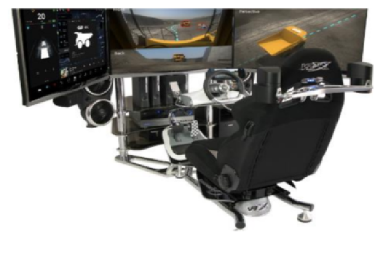
Development of a remote-control training platform and training programme for autonomous trucks.
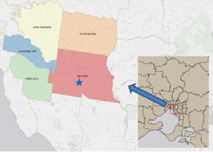
Network-science methods for hierarchical control across large urban road networks with multiple structures.
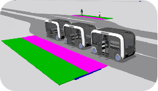
Autonomous vehicle platforms, enabling technologies and service solutions for tourism shuttle bus operations.
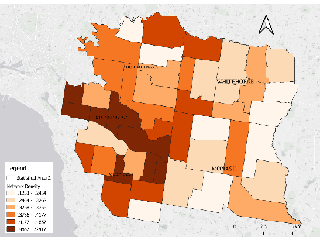
Macroscopic methods to monitor and manage congestion across multimodal road networks.
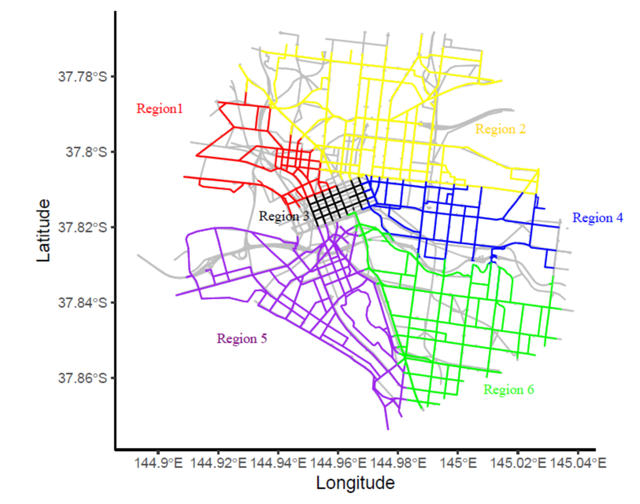
Large-scale signalised network control accounting for connected vehicles and uncertain travel demand.